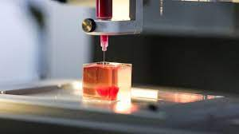

| Técnicas para su fabricación | |
| La impresora de colágeno de 3D Systems utiliza un método llamado estereolitografía. Un láser ultravioleta parpadea a través de un charco poco profundo de colágeno al que se le han introducido con moléculas fotosensibles. En los puntos en los que el láser apunta durante más tiempo, el colágeno se cura y se vuelve sólido. Poco a poco, el objeto que se está imprimiendo va descendiendo y se le añaden nuevas capas por encima. |  |